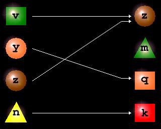
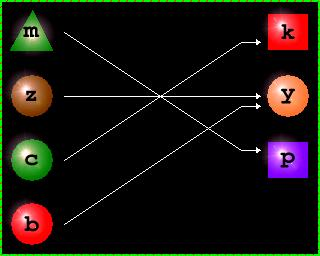
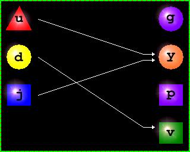

f désigne une application de E dans F.
Y, Y
1 et Y
2 désignent des parties quelconques de F
X, X
1 et X
2 désignent des parties quelconques de E
- Montrer que f -1(Y1∩Y2)=f -1(Y1)∩f -1(Y2)
- Montrer que f(X1∩X2)⊆f(X1)∩f(X2)
- A-t-on toujours f(X1∩X2)=f(X1)∩f(X2) ?
- Montrer que f -1(Y1∪Y2)=f -1(Y1)∪f -1(Y2)
- X ⊆ f -1(f(X)
- f(f -1(Y)⊆Y
- Montrer que X1⊆X2 ⇔ f(X1) ⊆ f(X2) est en général fausse
- Montrer que f(f -1(Y)=Y est en général fausse
- Montrer que X⊆f -1(Y) ⇔ f(X)⊆Y
- Montrer que f(X1∪X2)=f(X1)∪f(X2)
- Montrer que f -1(F-Y) = E-f -1(Y)
aide
Utiliser la définition des images directes et réciproques:
x ∈ f -1 (Y1 ) ⇔ f(x) ∈ Y1
y ∈ f(X1 ) ⇔ ∃ x ∈ X1 | f(x)=y
Utiliser également la définition de l'intersection, de la réunion de deux ensembles.
x ∈ A∩ B ⇔ x ∈ A ∧ x ∈ B
x ∈ A∪ B ⇔ x ∈ A ∨ x ∈ B
Utiliser aussi la définition de l'égalité de deux ensembles
A=B ⇔ x ∈ A ⇔ x ∈ B
Trouver des contre exemples pour montrer que certaines inégalités sont fausses.
solution
- x∈f -1(Y1∩Y2) ⇔ f(x)∈Y1∩Y2 ⇔ (f(x)∈Y1∧f(x)∈Y2) ⇔ (x∈f -1(Y1)∧x∈f -1(Y2)) ⇔ x∈f -1(Y1)∩f -1(Y2)
- x∈X1∩X2 ⇔ x∈X1∧x∈X2 ⇒ f(x)∈X1∧f(x)∈X2 ⇒ f(x)∈f(X1)∩f(X2)
- f(X1∩X2)=f(X1)∩f(X2) est en général fausse :
Voici un contre exemple avec X1={v,y}=X2={z,n}

X1∩2=∅ donc f(X1∩X2)= ∅
cependant f(X1∩X2)={z}
- x∈f -1(Y1∪Y2) ⇔ f(x)∈Y1∪Y2⇔(f(x)∈Y1∨f(x)∈Y2) ⇔ (x∈f -1(Y1)∨x∈f -1(Y2)) ⇔ x∈f -1(Y1)∪f -1(Y2)
- Evident
- Evident
- Voici un contre exemple avec X={z,c,b} f -1(f(X))=E≠ X :

- Voici un contre exemple avec Y={g,y,v}:

- Ceci résulte de:
Si X1 et X2 sont deux parties de E X1⊆X2 ⇒ f(X1)⊆f(X2)
Si Y1 et Y2 sont deux parties de F Y1⊆Y2 ⇒ f -1(Y1)⊆f -1(Y2 )
- y ∈ f(X1∪X2) ⇔ ∃x∈X1∪X2|y=f(x). Or x∈X1∪X2 ⇔ x∈X1∨x∈X2 ⇔ f(x)∈f(X1)∨f(x)∈f(X2) ⇔ f(x)∈f(X1)∪f(X2)
- y ∈ f -1(F-Y) ⇔ f(x)∉Y ⇔ x∉f -1(Y)
f denotes a mapping from E to F.
Y, Y
1 and Y
2 designate parts of F
X, X
1 and X
2 designate parts of E
- Show that f -1(Y1∩Y2) = f -1(Y1)∩f -1(Y2)
- Show that f(X1∩X2) ⊆f(X1)∩f(X2)
- Do we always have f(X1∩X2) = f(X1)∩f(X2)?
- Show that f -1(Y1∪Y2) = f -1(Y1)∪f -1(Y2)
- X ⊆ f -1(f(X)
- f(f -1(Y)⊆Y
- Show that X1⊆X2⇔ f(X1) ⊆ f(X2) is generally false
- Show that f(f -1(Y) = Y is in general false
- Show that X⊆f -1(Y) ⇔ f(X) ⊆Y
- Show that f(X1∪X2) = f(X1)∪f(X2)
- Show that f -1(FY) = Ef -1(Y)
hint
Use the definition of direct images and preimages:
x ∈ f -1 (Y1 ) ⇔ f(x) ∈ Y1
y ∈ f(X1 ) ⇔ ∃ x ∈ X1 | f(x)=y
Also use the definition of the intersection, the union of two sets.
x ∈ A ∩ B ⇔ x ∈ A ∧ x ∈ B
x ∈ A ∪ B ⇔ x ∈ A ∨ x ∈ B
Also use the definition of the equality of two sets
A=B ⇔ x ∈ A ⇔ x ∈ B
Find counter examples to show that some inequalities are false.
solution
- x∈f -1(Y1∩Y2) ⇔ f(x)∈Y1∩Y2 ⇔ (f(x)∈Y1∧f(x)∈Y2) ⇔ (x∈f -1(Y1)∧x∈f -1(Y2)) ⇔ x∈f -1(Y1)∩f -1(Y2)
- x∈X1∩X2 ⇔ x∈X1∧x∈X2 ⇒ f(x)∈X1∧f(x)∈X2 ⇒ f(x)∈f(X1)∩f(X2)
- f (X1∩X2) = f (X1) ∩f (X2) is generally false:
Here is a counter example with X1= {v, y} = X2= {z, n}
X1∩2= ∅ so f (X1∩X2) = ∅
however f (X1∩X2) = {z}
- x∈f -1(Y1∪Y2) ⇔ f(x)∈Y1∪Y2⇔(f(x)∈Y1∨f(x)∈Y2) ⇔ (x∈f -1(Y1)∨x∈f -1(Y2)) ⇔ x∈f -1(Y1)∪f -1(Y2)
- Obvious
- Obvious
- Here is a counter example with X = {z, c, b} f -1(f (X)) = E ≠ X:
- Here is a counter example with Y = {g, y, v}:
- This results from:
If X1 and X2 are two parts of EX1 ⊆X2 ⇒ f (X1 ) ⊆f (X2 )
If Y1 and Y2 are two parts of FY1 ⊆Y2 ⇒ f -1 (Y1 ) ⊆f -1 (Y2 )
- y ∈ f(X1 ∪X2 ) ⇔ ∃x∈X1 ∪X2 |y=f(x). Or x∈X1 ∪X2 ⇔ x∈X1 ∨x∈X2 ⇔ f(x)∈f(X1 )∨f(x)∈f(X2 ) ⇔ f(x)∈f(X1 )∪f(X2 )
- y ∈ f -1 (F-Y) ⇔ f(x)∉Y ⇔ x∉f -1 (Y)